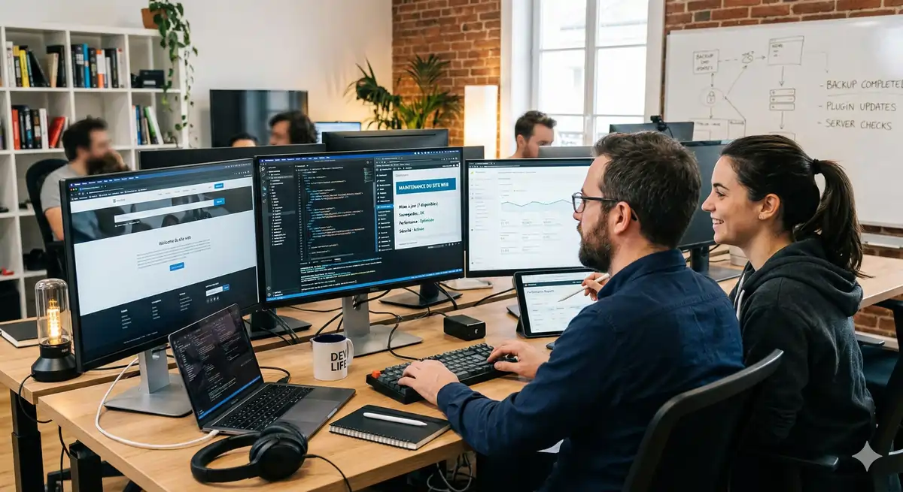

BLOG
Alizée Web

Maintenance74 % des sites web tournent sur une version de PHP obsolète, sans correctif de sécurité. Votre site créé il y a 2 ou 3 ans est probablement dans ce cas — et vous ne le savez pas. Cet article vous explique exactement ce qui se dégrade, à quelle vitesse, et ce que ça vous coûte réellement.
Vous ne savez pas dans quel état est votre site ? Demandez un audit maintenance gratuit.
Obtenir mon diagnostic complet →Sommaire
Chrome ne va pas « peut-être » durcir les règles : le calendrier est posé, et les sites encore en HTTP vont littéralement afficher un écran d'avertissement rouge avant même que la page ne se charge.
Depuis avril 2025, Google Chrome affiche déjà un avertissement bloquant sur tous les sites HTTP pour les internautes ayant activé l'option « Enhanced Safe Browsing » — environ 1 milliard d'utilisateurs selon les chiffres communiqués par Google lors de Google I/O 2025. En octobre 2026, Chrome 154 activera cette protection pour 100 % des utilisateurs par défaut.
Dans la majorité des cas que nous auditons, la migration HTTPS a été faite « à la va‑vite » : le certificat a été installé chez l'hébergeur, les liens internes ont été corrigés partiellement, mais les redirections 301 globales n'ont jamais été mises en place. Résultat : Google voit deux versions de chaque page (HTTP et HTTPS), divise l'autorité, et finit par déclasser une bonne partie du site.
Votre certificat SSL est-il bien configuré ? On vérifie ça gratuitement.
Vérifier ma configuration SSL →Une migration HTTP→HTTPS bien menée n'entraîne aucune perte durable de trafic, mais une migration bâclée peut coûter des mois de visibilité. Pour une TPE qui génère 5 000 € de chiffre d'affaires par mois via son site, perdre 30 % de trafic pendant 6 mois représente déjà plus de 9 000 € de manque à gagner.
Chaque seconde de lenteur supplémentaire sur votre site coûte des ventes, et ce coût augmente mécaniquement au fil des mois si personne ne surveille vos performances.
Sans maintenance, un site accumule progressivement des sources de friction invisibles : révisions d'articles jamais nettoyées, images originales à 4 Mo non compressées, scripts tiers (chat, analytics, pixel publicitaire) qui prennent du poids à chaque nouvelle version, base de données fragmentée par des années de logs et de spam. Pour vous, qui consultez le site en cache sur une bonne connexion, tout semble normal. Pour un nouveau visiteur sur mobile 4G, la différence entre un site entretenu et un site laissé à l'abandon est flagrante.
« Une amélioration de 0,1 seconde sur le temps de chargement génère en moyenne +8,4 % de conversions et +9,2 % de valeur de panier moyen. »
Étude Deloitte Digital & Google, « Milliseconds make millions », retail multi‑pays.
Les exemples concrets sont parlants : Walmart a constaté une hausse de 2 % des conversions pour chaque seconde de gagnée sur le temps de chargement de ses pages. BMW a multiplié par presque quatre le taux de clic vers ses concessionnaires (de 8 % à 30 %) après une optimisation profonde de sa version mobile. Ces chiffres viennent de géants, mais les mécanismes sont identiques pour un artisan plombier ou un cabinet de comptable.
Calculez ce que vous coûte la lenteur de votre site. La formule ci‑dessous applique la perte moyenne de 7 % de conversions par seconde de retard, sur une année complète.
Vous voulez connaître le vrai score de performance de votre site ? Demandez votre audit gratuit.
Analyser les performances de mon site →Pour illustrer : un site e‑commerce à 100 000 €/mois perdant 1 seconde de temps de chargement perd environ 84 000 € par an. À l'inverse, gagner 0,5 seconde peut financer largement un forfait de maintenance site internet professionnelle.
Depuis mars 2024, Google intègre pleinement les Core Web Vitals (LCP, INP, CLS) comme signal de classement direct. Un site dont les scores se dégradent mois après mois perd des positions sans pénalité manuelle, sans message d'alerte et sans mail — simplement parce que l'expérience réelle des utilisateurs se détériore.
La majorité des propriétaires de site se disent « trop petits pour intéresser les hackers », alors que leur site est bombardé de tentatives d'intrusion automatisées 24 h/24.
« En 2023, 60 % des compromissions WordPress provenaient de credentials volés (identifiants administrateur), pas de plugins obsolètes. »
Source : We Watch Your Website, analyse de 851 milliards de logs d'attaques WordPress.
WordPress représente environ 43 % de tous les sites web dans le monde (source : W3Techs 2025). C'est aussi le CMS le plus documenté, avec des milliers de thèmes et de plugins. Ce succès en fait la cible numéro 1 des bots automatisés : des scripts qui scannent des millions de sites par jour à la recherche des mêmes failles connues.
Entre la publication d'une faille et la première vague d'exploitation à grande échelle, la fenêtre se compte désormais en heures, parfois en dizaines de minutes. En octobre 2025 par exemple, une campagne massive a exploité une vulnérabilité critique dans plusieurs plugins WordPress populaires (GutenKit, Hunk Companion, Ultimate Member) restés non mis à jour pendant plus d'un an sur une grande partie des sites installés.
Le plus insidieux : les dépendances cachées. Certains thèmes embarquent leurs propres bibliothèques (ancien script de slider, outil de recadrage d'image type TimThumb) qui n'apparaissent jamais dans la liste des plugins et ne se mettent jamais à jour. Votre tableau de bord peut afficher « Tous vos plugins sont à jour » alors que plusieurs morceaux de code vulnérable dorment dans les fichiers du thème.
Les TPE françaises sont en première ligne : selon le rapport 2024 de l'assureur Hiscox, 43 % des cyberattaques ciblent des petites entreprises, mais seules 14 % d'entre elles se déclarent préparées. Une étude du National Cyber Security Alliance citée par la CPME rappelle que 60 % des PME victimes d'une cyberattaque majeure ferment dans les 6 mois.
Au‑delà de la perte de visibilité, une compromission peut aussi devenir un problème juridique : un simple formulaire de contact mal sécurisé sur un site non maintenu qui fuite des données personnelles peut déclencher une enquête de la CNIL. En théorie, les amendes RGPD peuvent atteindre 4 % du chiffre d'affaires annuel mondial. Pour une petite structure, une procédure de ce type suffit à mettre l'entreprise à l'arrêt pendant des semaines.
PHP est le moteur invisible qui fait tourner environ 73 % de tous les sites web, WordPress compris — mais la plupart des propriétaires de site ne connaissent même pas la version utilisée.
Chaque version de PHP a une date officielle de fin de support (End Of Life, EOL). Après cette date, plus aucun correctif n'est publié, même pour des failles critiques. En pratique, cela signifie qu'une vulnérabilité découverte sur votre version sera rendue publique, parfois exploitée activement, sans qu'aucune mise à jour ne soit proposée par l'éditeur.
| Version PHP | Statut | Fin de support officielle | % de sites |
|---|---|---|---|
| PHP 5.x | ☠️ Mort | Décembre 2018 | ~22 % des sites PHP |
| PHP 7.3 | ☠️ Mort | Décembre 2021 | ~10 % |
| PHP 7.4 | ☠️ Mort | Novembre 2022 | 35,68 % des sites |
| PHP 8.0 | ☠️ Mort | Novembre 2023 | 9,8 % |
| PHP 8.1 | ⚠️ EOL | Décembre 2025 | — |
| PHP 8.3+ | ✅ Supporté | — | — |
D'après les statistiques WordPress.org (octobre 2025), 39 % des sites WordPress tournent encore sur PHP 8.0 ou inférieur, donc déjà hors support. Cela représente plusieurs dizaines de millions de sites vulnérables par conception, même si tous les plugins sont à jour.
Le sujet n'est pas seulement la sécurité : les benchmarks publiés par l'équipe PHP montrent que PHP 7.4 est environ 3 fois plus lent que PHP 8.3 sur des applications réelles. Sur un WordPress standard, un simple passage de PHP 7.4 à PHP 8.2/8.3 peut diviser par deux le temps de réponse serveur, sans changer une seule ligne de code dans le site lui‑même.
Les frameworks suivent la même logique. Voici un aperçu des versions Laravel encore vues en production lors de nos audits :
| Version Laravel | Statut |
|---|---|
| Laravel 5/6/7/8 | ☠️ Mort (fin de support entre 2021 et 2022) |
| Laravel 9 | ☠️ Mort (février 2024) |
| Laravel 10 | ☠️ Mort (août 2025) |
| Laravel 11+ | ✅ Supporté |
Un site « sur‑mesure » développé en 2022 ou 2023 tourne très souvent sous Laravel 9 ou 10. Dès 2025, ces versions ne reçoivent plus aucun correctif. La situation est similaire côté Joomla : Joomla 3.x est arrivé en fin de support en août 2023, mais représentait encore environ 60 % des sites Joomla actifs en 2025 (source : Joomla.org).
Le problème ne se limite pas à PHP et Laravel. Les CMS e‑commerce et les outils de gestion de contenu suivent exactement la même logique — et leurs versions obsolètes sont encore massivement en production chez les TPE françaises.
| Version PrestaShop | Statut | Fin de support |
|---|---|---|
| PrestaShop 1.6 | ☠️ Mort | Octobre 2019 |
| PrestaShop 1.7 | ☠️ Mort | Octobre 2022 |
| PrestaShop 8.x | ✅ Supporté | — |
PrestaShop 1.7 est la version la plus répandue parmi les boutiques en ligne françaises créées entre 2017 et 2022. Elle est en fin de vie depuis octobre 2022 : plus aucun correctif de sécurité n'est publié, même pour des failles critiques. Une boutique PrestaShop 1.7 compromise peut exposer les données bancaires de vos clients — avec les responsabilités juridiques que cela implique.
| Version Drupal | Statut | Fin de support |
|---|---|---|
| Drupal 7 | ☠️ Mort | Janvier 2025 |
| Drupal 9 | ☠️ Mort | Novembre 2023 |
| Drupal 10+ | ✅ Supporté | — |
Drupal 7 était encore utilisé par des milliers de sites de collectivités, d'associations et d'organismes publics français au moment de sa fin de vie en janvier 2025. Contrairement à WordPress, Drupal ne propose pas de mise à jour automatique entre versions majeures : passer de Drupal 7 à Drupal 10 est un projet de migration complet, souvent équivalent à une refonte.
Votre site créé en 2021 tourne probablement sur PHP 7.4 (fin de support : novembre 2022), WordPress 5.x et des plugins âgés de 3 ans. C'est l'équivalent d'un moteur de voiture qui n'a pas fait de vidange depuis 80 000 km : ça tourne encore — jusqu'au jour où ça casse d'un coup, souvent au pire moment pour votre activité.
Vous ne savez pas quelle version PHP tourne sur votre site ? On vous le dit en 5 minutes.
Connaître ma version PHP →Le 10 mars 2021, un incendie ravage le datacenter OVHcloud de Strasbourg (SBG2) et endommage plusieurs autres bâtiments. En quelques heures, 3,6 millions de sites et services en ligne sont détruits ou fortement perturbés (source : CNIL / OVHcloud).
Des milliers d'artisans, de TPE et d'associations ont perdu leur site définitivement parce que l'unique copie des fichiers et de la base de données se trouvait… dans le datacenter en feu.
Pour eux, la seule option a été de tout reconstruire à partir de zéro, parfois sans texte original, sans photos haute définition, sans historique client.
Un site vitrine sur‑mesure coûte entre 3 000 € et 7 000 € à reconstruire. Un site e‑commerce sérieux peut facilement monter à 15 000 € ou 20 000 €. À l'inverse, une sauvegarde externe automatisée et testée vous revient souvent entre 5 € et 20 € par mois. Le rapport risque/coût est difficile à ignorer.
Pour qu'une sauvegarde mérite ce nom, elle doit remplir plusieurs critères : elle doit inclure les fichiers ET la base de données, être stockée sur un serveur distinct (ou dans un cloud indépendant de votre hébergeur principal), offrir une rétention d'au moins 30 jours et, surtout, être testée. Une sauvegarde que vous n'avez jamais restaurée au moins une fois n'est qu'une promesse.
Dans la pratique, nous voyons régulièrement des cas où l'hébergeur propose une sauvegarde « incluse », mais celle‑ci est stockée dans le même datacenter, ne contient pas la totalité des données, ou n'est conservée que 7 jours. En cas de piratage silencieux (malware qui agit pendant plusieurs semaines), ces sauvegardes ne servent plus à rien : toutes les copies contiennent déjà le code malveillant.
Le même problème se pose avec Google Search Console : cet outil gratuit est le tableau de bord d'alerte de Google (problèmes d'indexation, alertes de sécurité, pénalités), mais une grande majorité de propriétaires de site ne l'a jamais ouvert. Un site peut être blacklisté pendant des semaines pour cause de malware ou de spam sans que le propriétaire ne voie autre chose qu'une baisse de demandes de devis.
Vous n'êtes pas certain que vos sauvegardes vous permettraient de restaurer le site en cas de problème ? L'équipe Alizée Web peut tester votre dispositif et vous proposer un plan de secours fiable.
Parler de mes sauvegardes →Une maintenance sérieuse ne se limite ni aux mises à jour de plugins, ni à un email automatique de l'hébergeur : c'est un processus structuré couvrant l'ensemble de la pile technique, la sécurité, les performances et la visibilité.
Tout commence par un inventaire précis : version de PHP, version du CMS (WordPress, Joomla, PrestaShop…), thème utilisé, frameworks éventuels (Laravel, Symfony) et dépendances critiques. Sur cette base, un plan de mise à niveau est établi pour ramener progressivement l'ensemble vers des versions supportées, sans casser le site ni perdre le référencement. Pour un artisan ou une TPE, cela peut s'accompagner d'une réflexion sur l'opportunité d'une refonte de site si la technologie est vraiment en fin de vie.
La sécurité n'est pas un état mais une activité continue. Une maintenance professionnelle inclut la surveillance des comptes administrateurs, la mise en place d'authentification renforcée, la limitation des tentatives de connexion, le monitoring de l'intégrité des fichiers clés et la revue régulière des logs. Sur WordPress, cela passe aussi par la désactivation et la suppression des plugins abandonnés, et la vérification des accès FTP/SSH laissés ouverts par d'anciens prestataires.
Chaque mois, la base de données est allégée (révisions, paniers expirés, commentaires spam, logs obsolètes), ce qui permet souvent de récupérer 200 à 400 ms sur le temps de réponse serveur. Les nouvelles images sont systématiquement compressées et redimensionnées, les scripts tiers (chat, analytics, tracking) sont passés en revue, et les scores Core Web Vitals sont suivis pour détecter toute dérive.
La maintenance inclut la surveillance du certificat SSL (renouvellement, algorithme de chiffrement), la correction des contenus mixtes (images ou scripts encore chargés en HTTP), et la vérification des formulaires de contact et des bannières cookies. C'est ici que se joue une partie de votre conformité RGPD : collecte minimale de données, transmission chiffrée, mentions légales et politique de confidentialité à jour.
Une équipe sérieuse ne se contente pas d'activer une option « sauvegarde nightly » chez l'hébergeur : elle vérifie que les sauvegardes se déclenchent réellement, que les fichiers et la base sont bien présents, que les archives sont stockées sur un autre serveur et qu'une restauration complète est testée au moins une fois par trimestre.
Enfin, la maintenance comprend le suivi régulier de Google Search Console (erreurs d'exploration, alertes de sécurité, performances), le monitoring de l'uptime (temps de disponibilité) de votre site et l'envoi d'un rapport mensuel chiffré. Vous savez ainsi, noir sur blanc, ce qui a été fait, quels incidents ont été détectés et comment évoluent vos indicateurs clés.
| Action | Fréquence recommandée |
|---|---|
| Mises à jour plugins / thème / CMS | Hebdomadaire |
| Nettoyage base de données | Mensuel |
| Vérification SSL et redirections | Mensuel |
| Audit performances PageSpeed / Core Web Vitals | Mensuel |
| Vérification Google Search Console | Mensuel |
| Test de restauration d'une sauvegarde | Trimestriel |
| Audit sécurité complet | Semestriel |
| Vérification version PHP / framework | Semestriel |
Ce niveau de rigueur est difficile à atteindre en « faisant ça soi‑même le soir » quand on est artisan, dirigeant de TPE ou profession libérale. C'est précisément pour cela qu'existent des offres de maintenance site internet professionnelle, souvent couplées à des prestations de création de site internet pour assurer la continuité entre le projet initial et la vie du site.
La plupart des problèmes décrits dans cet article sont invisibles depuis votre navigateur. Votre site peut sembler parfaitement fonctionnel tout en tournant sur un PHP obsolète, avec des scores de performance en chute libre, une configuration SSL incorrecte et des sauvegardes inexistantes.
Alizée Web propose un audit maintenance gratuit comprenant : version PHP détectée, scores Core Web Vitals, configuration SSL, état des sauvegardes et analyse Search Console. Un rapport chiffré et priorisé vous est remis sous 48 heures.
Quel est le prix d'une maintenance site internet ?
Pour une TPE, un artisan ou une profession libérale, la maintenance site internet démarre autour de 50 à 80 € HT par mois pour une formule basique (mises à jour régulières, surveillance de l'uptime, sauvegardes externes automatisées). Les offres complètes incluant monitoring de sécurité, optimisation des performances, rapports mensuels détaillés et accompagnement SEO se situent généralement entre 150 et 300 € HT par mois. Au‑delà de 300 €, on parle le plus souvent de sites e‑commerce ou d'applications métiers sur mesure.
Comment savoir si mon site a besoin de maintenance ?
Cinq signaux doivent vous alerter immédiatement : votre site n'a pas été touché depuis plus de 18 mois, plusieurs plugins ou modules affichent une dernière mise à jour datant de plus de 6 mois, vous ne connaissez pas la version PHP utilisée, aucune sauvegarde externe n'est configurée en dehors de votre hébergeur, et vous n'avez jamais consulté vos scores PageSpeed ou Core Web Vitals. Si vous vous reconnaissez dans au moins deux de ces points, votre site a clairement besoin d'une maintenance.
Peut-on faire la maintenance d'un site soi-même ?
Il est tout à fait possible de gérer soi‑même certaines tâches simples, comme les mises à jour de base WordPress ou la suppression de plugins inutilisés. En revanche, la gestion de la version PHP, les migrations HTTPS, l'optimisation de la base de données, les audits de sécurité ou la configuration avancée de Google Search Console sont des opérations sensibles. Mal exécutées, elles peuvent casser le site ou provoquer une chute brutale de visibilité sur Google. C'est là que l'accompagnement d'une agence comme Alizée Web prend tout son sens.
Que se passe-t-il si on ne fait pas de maintenance ?
Sans maintenance, la dégradation est progressive mais inévitable. Les performances se dégradent (chaque seconde de retard peut coûter environ 7 % de conversions), les versions de PHP, du CMS et des plugins deviennent obsolètes, les failles de sécurité s'accumulent et les scores Core Web Vitals chutent. À terme, vous vous exposez à un piratage, à une panne critique ou à une refonte forcée bien plus coûteuse que plusieurs années de maintenance préventive.
La maintenance site internet est-elle déductible fiscalement ?
Oui. Pour une entreprise ou un indépendant, les dépenses de maintenance site internet sont considérées comme des charges d'exploitation courantes. Elles sont comptabilisées en charges déductibles au même titre que vos autres dépenses informatiques, de communication ou de prestations externes. Votre expert‑comptable pourra les rattacher au bon poste de charges.
Quelle est la différence entre maintenance et refonte de site ?
La maintenance vise à préserver et optimiser le site existant de manière continue : mises à jour, sauvegardes, sécurité, performances, suivi des indicateurs. La refonte consiste à reconstruire le site, au moins en grande partie (design, structure, technologie), souvent tous les 4 à 7 ans. Une refonte représente un investissement ponctuel de 3 000 à 15 000 € pour une TPE, alors qu'une bonne maintenance mensuelle allonge la durée de vie du site et espace largement ces refontes. Les deux approches sont complémentaires : une refonte sans maintenance s'use prématurément, une maintenance bien pensée retarde l'échéance d'une nouvelle refonte.
Articles récents

GEO SEO : comment optimiser votre contenu pour les IA en 2026

SEO local : les 5 clés pour apparaître en premier sur Google